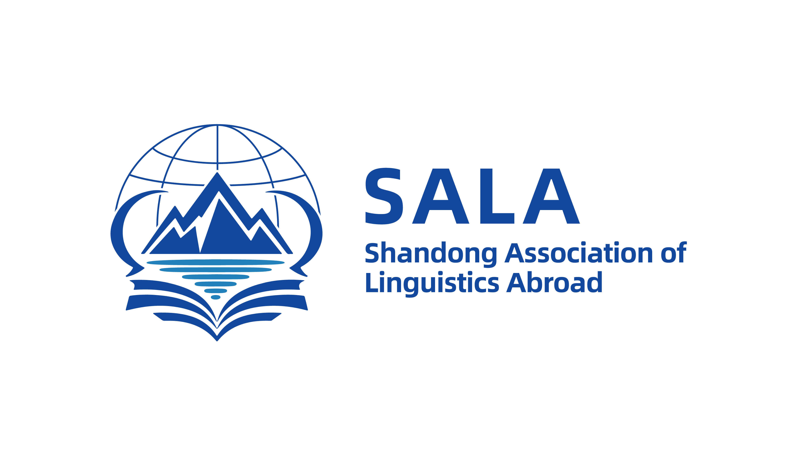

山
ROOTED IN SHANDONG立足齐鲁，向学术高峰不断攀登。
.png)
VISUAL IDENTITY & DIGITAL EXPERIENCE / 2026
PROJECT OVERVIEW / 项目介绍
山东省国外语言学学会成立于1995年，是连接山东省外国语言学研究、教育实践与学术交流的重要平台。学会立足齐鲁、面向全国、连接世界，长期致力于推动国外语言学研究与外语教育发展，汇聚省内外高校专家学者，促进学术交流、跨学科合作与青年人才成长。
面向数字化、智能化与全球化发展的新阶段，学会积极关注人工智能、语言教育、翻译传播、区域国别研究、数字人文及语言与社会等前沿领域，不断拓展国外语言学研究的边界，推动语言研究服务教育发展、文化交流与社会需求。
以“学术组织、齐鲁根基、国际视野、语言研究、跨学科创新”为设计线索，将学会的精神凝练为可识别、可传播、可延展的视觉语言。
ROOTED IN SHANDONG · ENGAGING THE WORLD
立足齐鲁 · 面向世界 · 聚焦语言 · 服务学术 · 促进交流 · 推动创新
01 / BRAND IDENTITY
以山、地球、对话弧线、书本与水纹构建标志，让齐鲁文化与全球视野在同一视觉体系中相遇。

立足齐鲁，向学术高峰不断攀登。
以全球视野观察语言，以开放姿态连接世界。
让语言成为思想交流与文明互鉴的桥梁。
汇聚知识、传播思想、培育新生学术力量。
思想因交流而流动，知识因传播而抵达更远。
02 / CORE VALUES
探索语言规律，理解语言与人、社会和世界的关系。
搭建跨院校、跨学科、跨文化的学术交流平台。
面向人工智能与数字文明，拓展语言研究新范式。
连接学者、知识、文化与世界。
03 / VISUAL APPLICATIONS
以统一的视觉识别连接空间、传播与日常触点，让每一次相遇都成为学术交流的开始。
.png)
.png)
.png)
.png)
.png)
.png)
04 / DIGITAL EXPERIENCE
从桌面到移动端，延续清晰、开放的品牌识别，连接学术信息、研究资源与交流场景。
.png)
1995—2025 / THIRTY YEARS
三十载学术积淀，三十载交流互鉴。从语言研究到跨学科探索，从外语教育到数字文明，从齐鲁大地到更广阔的学术世界，山东省国外语言学学会始终以语言为纽带，连接学者、知识与时代。
LANGUAGE · DIALOGUE · CONNECTION
汇聚思想，连接学术。在语言研究的不同领域之间建立连接，在不同学科之间展开对话，在理论探索与社会实践之间寻找新的可能。
语言不仅是沟通的工具，更是理解世界的方式。以语言连接文化，以研究深化理解，以开放的学术视野促进交流互鉴。
让新的声音被听见，让新的思想不断生长。汇聚青年学术力量，拓展语言研究边界，共同探索语言学的未来。